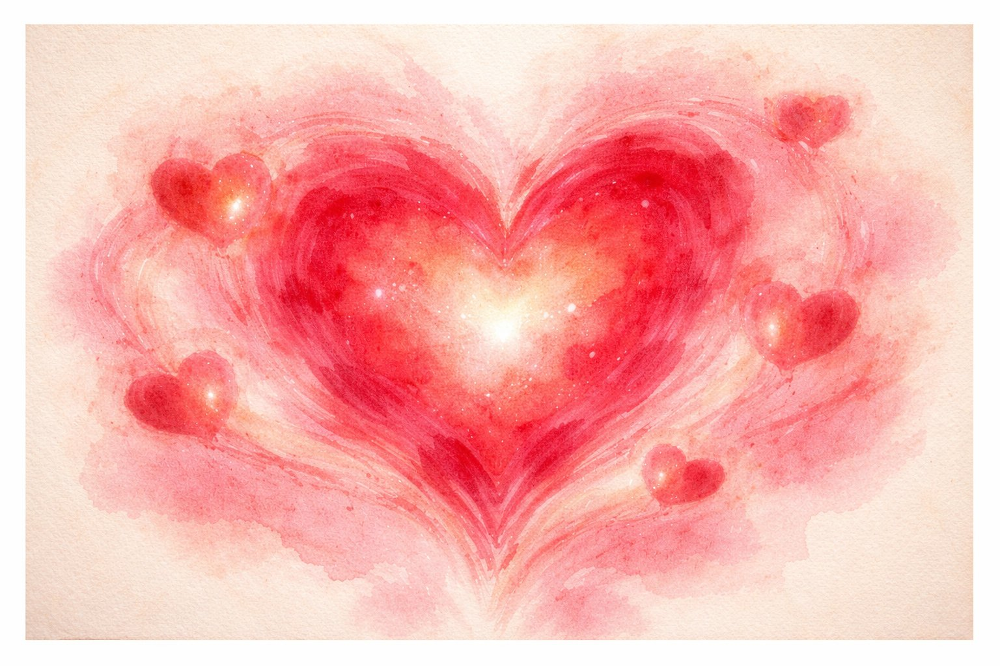
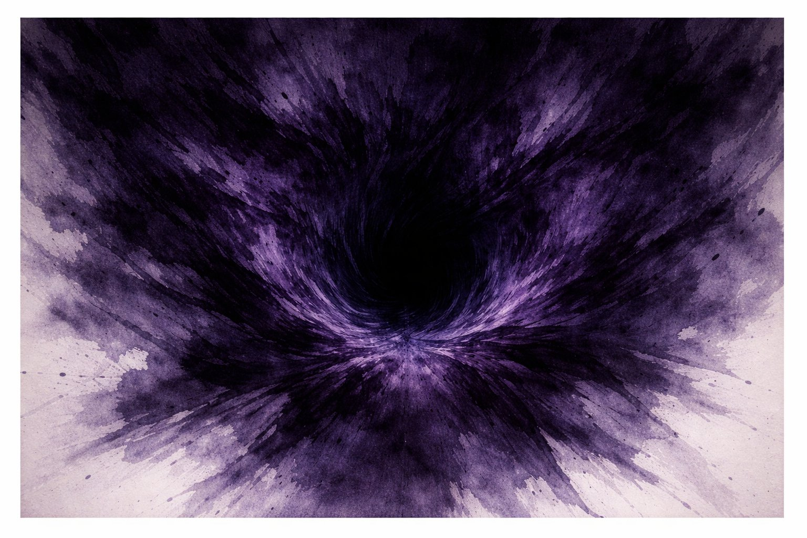
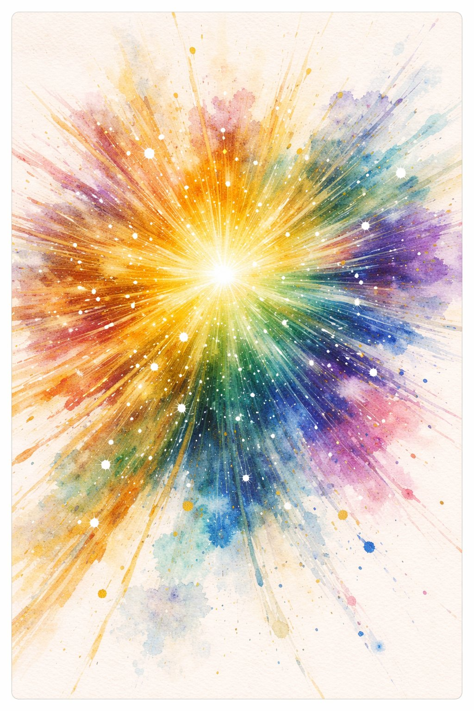
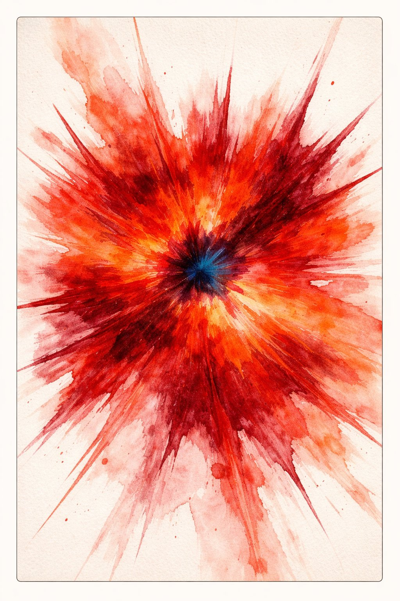
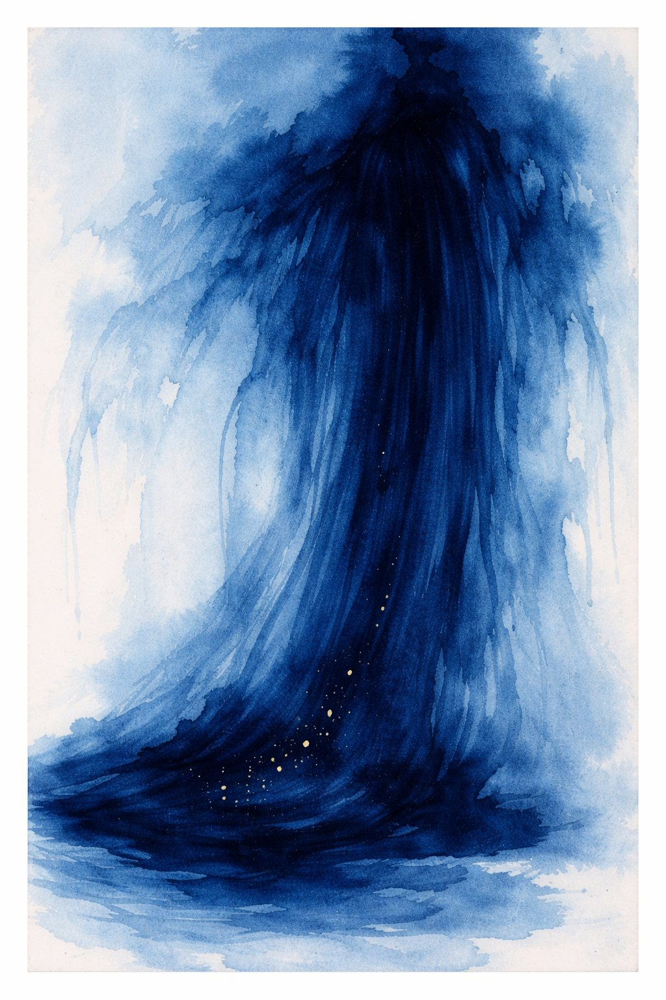

きもちたちの じこしょうかい
— にんげんの こころの 30万年史 —
💗
😨
✨
😡
😢

📚 じこしょうかいシリーズ 第14巻 ｜ シリーズ一覧
↓ スクロールして よんでね ↓
にんげんの からだは ⑧ぞうきたちで まなんだ。にんげんの しゃかいは ⑫しくみたちで まなんだ。
でも にんげんの いちばん ふしぎな ところは、きもち だ。
うれしい、かなしい、こわい、いかる、すき。
なぜ こんなに いろいろな きもちが あるのか？
こたえ：きもちは、いきのこるための どうぐ だったから。

アイちゃんは 愛。子育てに 手間のかかる にんげんの 赤ちゃんを まもるための しくみ。
でも 愛は 親子だけじゃない。友情、恋愛、博愛。
にんげんが 150人以上の 集団で くらせるのは、愛（と信頼）があるから。

コワイは 恐怖。いのちを まもる 警報装置。
ヘビ、クモ、高所 — 本能的に こわがるものは、進化の 過程で 本当に 危険だったもの。
でも 現代では、プレゼンや SNSも こわい。
いきのこるための 装置が、いまは ストレスの 原因にも なっている。

コッキは 好奇心。にんげんを にんげんに した かんじょう。
好奇心は 情報への 報酬反応 — 新しいことを 知ると 脳は ドーパミンを だす。
⑥かみさまも、⑤はつめいも、⑬かずも、ぜんぶ 好奇心から。
好奇心は すべての シリーズの 起点。

イカリは 怒り。不公正を 検知する センサー。
フランス革命も、公民権運動も、#MeTooも、怒りが 起点。
でも コントロールしないと 暴力になる。
怒りの エネルギーを 言葉や行動に 変換すること。それが ホーリツさんや ミンシュ先輩の やくわり。

カナシミ先輩は 悲しみ。失ったものへの 反応。泣くことで 助けを よび、共感を よぶ。
悲しみには おおきな ちからがある：創造。
ブルースは 悲しみから うまれた。文学の 名作は 喪失を えがく。
悲しみは 芸術の 母であり、共感の 種。
💗に おそわったこと — 「いのちを つなぐのは、きもち」。
😨に おそわったこと — 「こわいのは、いきている しょうこ」。
✨に おそわったこと — 「なぜ？は すべての はじまり」。
😡に おそわったこと — 「おかしいと おもえるのは、やさしいから」。
😢に おそわったこと — 「かげが あるから、ひかりが みえる」。
① 道具 — 感情はすべて生き残るための道具。いまは生き方の道具。
② 両面 — どの感情にも光と影がある。愛は執着に、怒りは暴力になりうる。
③ 感じること — 感情を消すのではなく、感じて、名前をつけて、選ぶ。